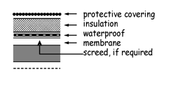
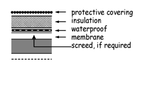

domestic | environment | precipitation | 2009
Every
building
must be designed and
constructed
in such a way that
there will not be a threat to the
building
or the health of the occupants
as a result of moisture from precipitation penetrating to the inner face
of the
building
.
Limitation:
This standard does not apply to a
building
where penetration of moisture
from the outside will result in effects no more harmful than those likely to
arise from use of the
building
.
3.10.0 Introduction
Rain penetration shows up as damp patches, usually after heavy rain, on the
inside of
external walls
, around door or window openings or on ceilings. It
can be difficult to pinpoint the exact route the rainwater is taking. For
example, a damp patch on a ceiling could be the result of a faulty flashing or
damaged felt on a
flat roof
some distance away from the damp patch.
Similarly, unless they have adequate damp proof courses and flashings,
materials in parapets and
chimneys
can collect rainwater and deliver it to
other parts of the
dwelling
below roof level. Penetration occurs most often
through walls exposed to the prevailing wet winds, usually south-westerly or
southerly.
BR 302
There are numerous publications providing good practice guidance on
methods of preventing rain penetration to internal surfaces of
buildings
. BRE
book ‘Roofs and Roofing – performance, diagnosis, maintenance, repair and
the avoidance of defects’ provides helpful guidance for
building
professionals
to address these problematic issues.
Explanation of terms
The following terms are included to provide clarity to their meaning in the
guidance to this standard.
A
vented cavity
means a cavity with openings to the outside air placed so as
to allow some limited, but not necessarily through air movement. The
openings are normally located at low level where they can also act as weep
holes to drain water from the cavity.
A
ventilated cavity
means a cavity with openings to the outside air placed so
as to promote through movement of air. The openings should be located at
high and low level.
In the case of
conversions
, as specified in regulation 4, the
building
as
converted
shall meet the requirements of this standard in so far as is
reasonably practicable
, and in no case be worse than before the
conversion
(regulation 12, schedule 6).
3.10
—
3.10.0
domestic | environment | precipitation | 2009
3.10.1 General provisions
A floor, wall, roof or other
building
element exposed to precipitation, or wind
driven moisture, should prevent penetration of moisture to the inner surface
of any part of a
dwelling
so as to protect the occupants and to ensure that the
building
is not damaged.
can be unaffected by damp penetration and the following guidance therefore
may not be relevant.
When using any of the
constructions
below, the following general
recommendations should be followed for walls or roofs, as appropriate:
•
masonry walls of bricks and/or blocks incorporating damp-proof courses,
flashings and other materials and components
constructed
in accordance
with the relevant recommendations of BS 5628: Part 3: 2005. The
construction
used should suit the degree of exposure to wind and rain in
accordance with Clause 21 and as described in BS 8104: 1992;
•
masonry walls incorporating external rendering which conforms to the
relevant recommendations of BS 5262: 1991, to suit the degree of
exposure and the type of masonry;
•
masonry walls of natural stone or cast stone blocks
constructed
in
accordance with the relevant recommendations of Section 3 of BS 5390:
1976 (1984) and to suit the degree of exposure to wind and rain as
described in BS 8104: 1992;
•
masonry cavity walls incorporating insulation material, either as a
complete or partial cavity fill, where the insulating material is the subject of
a current certificate issued under the relevant conditions of an
independent testing body. The walls should be
constructed
in accordance
with the terms of the certificate and to suit the degree of exposure to wind
and rain as described in BS 8104: 1992 and the relevant
recommendations of the following British Standards:
Cavity wall insulation
Materials or conditions
British Standards
Urea formaldehyde (UF) foam
BS 5617: 1985 and BS 5618: 1985
Man-made mineral fibre (slabs)
BS 6676: Parts 1: 1986
Assessment of walls for filling
BS 8208: Part 1: 1985
•
roofs with copper, lead, zinc and other sheet metal roof coverings require
provision for expansion and contraction of the sheet material. In 'warm
deck' roofs, in order to reduce the risk of condensation and corrosion, it
may be necessary to provide a ventilated air space on the cold side of the
insulation and a high performance vapour control layer between the
insulation and the roof structure. It may also be helpful to consult the
relevant trade association.
3.10.1
—
3.10.1
domestic | environment | precipitation | 2009
•
walls or roofs incorporating cladding materials
constructed
in accordance
with the recommendations of the following British Standards or Codes of
Practice:
Wall and roof cladding materials
Materials and
conditions
Element
British Standards and
Codes of Practice
Aluminium
wall or roof
CP 143: Part 15: 1973 (1986)
Galv. corrugated steel
wall or roof
CP 143: Part 10: 1973
Lead
wall or roof
BS 6915: 2001
Copper
wall or roof
CP 143: Part 12: 1970 (1988)
Slates and tiles
wall or roof
BS 5534: Part 1: 2003
Zinc
wall or roof
CP 143: Part 5: 1964
Non-loadbearing walls
wall or steep roof BS 8200: 1985
PC concrete cladding
wall
BS 8297: 2000
Natural stone cladding
wall
BS 8298: 1994
roof
BS 6229: 2003
Bitumen felt
roof
BS 8217: 2005
Mastic asphalt
roof
BS 8218: 1998
3.10.2 Wall constructions (solid, masonry)
The following sketches provide guidance on recommended methods of
construction
to prevent rain penetration to the inner surfaces of the
building
.
The thickness and other dimensions quoted are the minimum recommended
unless otherwise stated. Greater figures are therefore possible.
Wall type A
(solid wall with internal
insulation)
Solid wall, 200 mm thick of bricks,
blocks or slabs of clay, calcium
silicate, concrete or cast stone. Wall
rendered or unrendered externally.
Insulation and plasterboard
internally, with a cavity 25 mm wide.
Wall type B
(solid wall with external
insulation)
Solid wall as A above. Insulation
applied to the external surface of the
wall; protected externally either by
cladding (of sheets, tiles or boarding)
with
permanent ventilation
, or by
rendering. Wall with or without an
internal surface finish of plaster or
plasterboard.
3.10.1
—
3.10.2
domestic | environment | precipitation | 2009
Wall type A
(cavity wall with internal
insulation)
Cavity wall of 2 leaves of masonry
separated by a 50 mm cavity; each
leaf, 100 mm thick, of either bricks or
blocks of clay, calcium silicate or
concrete. Wall rendered or
unrendered externally. Insulation
applied as a lining to the internal
surface of the wall and plasterboard.
Wall type B
(cavity wall with cavity
fill insulation)
Cavity wall as A above. Wall
rendered or unrendered externally.
Insulation applied as a cavity fill.
Wall with or without an internal
surface finish of plaster or
plasterboard. This
construction
is
only recommended for sheltered
conditions.
Wall type C
(cavity wall with partial
fill insulation)
Cavity wall as A above. Wall
rendered or unrendered externally.
Insulation applied to either leaf as a
partial cavity fill so as to preserve a
residual space of 50 mm wide. Wall
with or without an internal surface
finish of plaster or plasterboard.
3.10.4 Conservatories and extensions
Careful consideration should be given to the detailing of an existing wall of a
building
when a
conservatory
or extension is added. The outer leaf of a
previously
external wall
will become an internal wall and any moisture that
enters the cavity could collect and cause serious damage to the
building
.
Where the
dwelling
is located in an exposed location or where the existing
construction
might allow the passage of rain either through facing brick or a
poorly rendered masonry wall, the use of a cavity tray along the line of the
roof of the
conservatory
or extension may be appropriate. However in
sheltered situations or where the detailing can prevent damage to the
building
as a result of rain penetration a raggled flashing (chased into the
wall) may be sufficient.
3.10.3
—
3.10.4
domestic | environment | precipitation | 2009
Wall type A
(masonry cladding)
Framed wall of timber studs and
dwangs, with a vapour permeable
sheathing to the framing covered
with a breather membrane. Masonry
external cladding of 100 mm thick
clay brick or block, concrete or
calcium silicate brick or block, dense
in-situ concrete, lightweight concrete
or autoclaved aerated concrete, with
an externally ventilated cavity in
accordance with the guidance in
clause 3.10.6. Masonry cladding
rendered or unrendered externally.
Insulation applied as an infill to the
framing. The framing lined internally
with a vapour control layer and
plasterboard.
Wall type B
(weatherboarding, tile or
slate cladding)
Framed wall of timber studs and
dwangs with a breather membrane.
Cladding material, on battens and
counter battens as required, of
timber weather boarding, tile or slate.
Insulation and internal lining as A
above.
Wall type C
(sheet or panel cladding
with/without ventilated
cavity)
Framed wall of timber or metal studs
and dwangs. Sheet or panel cladding
material of fibre cement, plastic,
metal, GRP or GRC. Insulation
applied either to the internal face of
the framing with
permanent
ventilation
behind any impervious
cladding, or as an infill to the
framing; in either case the wall lined
internally with a vapour control layer
and a lining.
3.10.5
—
3.10.5
domestic | environment | precipitation | 2009
3.10.6 Ventilation of wall cavities
Ventilation of
external wall
cavities is necessary to prevent the build-up of
excessive moisture that could damage the fabric of a
building
. Ventilation
holes can also be used to drain excess water from the cavity that has entered
through the outer leaf.
Timber frame
Interstitial condensation is one of the major problems that need to be
addressed in timber framed
buildings
. To reduce the amount of interstitial
condensation to a level that will not harm the timber frame or sheathing, a
cavity of at least 50 mm wide should be provided between the sheathing and
the cladding. Where timber, slate or tile cladding is used, the width of the
cavity should be measured between the sheathing and the inner face of the
cladding, ignoring the battens and counter battens.
Where the outer leaf is of timber, slate or tile clad
construction
, a vented
cavity should be provided. A ventilated cavity should be provided for extra
protection in severely exposed areas. Where necessary refer to BS 8104:
1992. Due to the air gaps inherent between the components of a timber, slate
or tile clad wall, no proprietary
ventilators
should be necessary and a 10 mm
free air space should be sufficient.
Where the wall cavity is sub-divided into sections by the use of
cavity barriers
e.g. at mid-floor level in a 2
storey house
, the
ventilators
should be provided
to the top and bottom of each section of the cavity. Care should be taken with
rendered walls to prevent blockage of the
ventilators
.
Masonry outer leaf
Where the outer leaf is of masonry
construction
, venting of the cavity is
normally sufficient. Cavities should be vented to the outside air by installing
centres. Precipitation can penetrate the outer leaf of an external wall and
cavities are normally drained through weep holes. These weep holes can
also provide the necessary venting.
3.10.7 Roof constructions (flat)
The following sketches provide guidance on recommended methods of
construction
to prevent rain penetration to the inner surfaces of a
building
.
There is evidence to suggest that condensation in cold deck
flat roofs
is a
problem and should be avoided. Both the warm deck and warm deck inverted
roof
constructions
, where the insulation is placed above the roof deck, are
considered preferable. Further guidance is given to standard 3.15,
Condensation.
The following British Standards give recommendations on the design and
construction
of
flat roofs
:
BS 6229: 2003 – CoP for
flat roofs
with continuously supported coverings
BS 6915: 2001 – CoP Design and construction of fully supported lead sheet
roof and wall cladding
BS 8217: 2005 – CoP for reinforced bitumen membranes
BS 8218: 1998 – CoP for mastic asphalt roofing
CP 143 - 12: 1970 – CoP for sheet and wall coverings
3.10.6
—
3.10.7
domestic | environment | precipitation | 2009
Roof type A
(concrete – warm roof)
Flat roof
structure of in-situ or
precast concrete with or without a
screed; with or without a ceiling or
soffit. External weatherproof
covering; with insulation laid on a
vapour control layer between the
roof structure and the weatherproof
covering. [Note 1]
Roof type B
(concrete – inverted roof)
Flat roof
structure as A above.
External protective covering; with low
permeability insulation laid on a
waterproof membrane between the
roof structure and the external
covering.
Roof type C
(timber or metal frame –
warm roof)
Flat roof
structure of timber or
metal-framed
construction
with a
board decking 19 mm thick; with or
without a ceiling or soffit. External
weatherproof covering, insulation
and vapour control layer as A above.
[Note 1]
Roof type D
(timber or metal frame –
inverted roof)
Flat roof
structure as C above.
External protective covering,
insulation and waterproof membrane
as B above.
Roof type E
(troughed metal decking –
warm roof)
Flat roof
structure of timber or metal
framed
construction
with a troughed
metal decking; with or without a
ceiling or soffit. External
weatherproof covering and insulation
and vapour control layer as A above.
[Note 1]
3.10.7
—
3.10.7
 

domestic | environment | precipitation | 2009
Roof type F
(troughed metal decking –
inverted roof)
Flat roof
structure as E above.
External protective covering,
insulation and waterproof membrane
as B above.
Note 1
Roof types A, C and E are not suitable for sheet metal coverings that require
joints to allow for thermal movement. See also sub-clause f of clause 3.10.1.
3.10.8 Roof constructions (pitched)
BS 5534: 2003 gives recommendations on the design, materials, installation
and performance of slates, tiles and shingles including, amongst others,
information on rain and wind resistance. The British Standard also provides a
comprehensive list of other British Standards covering other less common
pitched roof coverings.
Roof type A
(slates or tiles – insulation
on a level ceiling)
Pitched roof structure of timber or
metal framed
construction
. External
weatherproof covering of slates or
tiles on under slating felt with or
without boards or battens.
Roof type B
(slates or tiles – insulation
on a sloping ceiling)
Pitched roof structure as A above.
External weatherproof covering as A.
Roof type C
(slates or tiles – insulation
as decking)
Pitched roof structure as A above
with a decking of low permeability
insulation fitted to and between the
roof framing. External weatherproof
covering of slates or tiles, with tiling
battens and counter battens (located
over roof framing), and a breather
membrane laid on the insulation
decking; with a sloping ceiling.
3.10.7
—
3.10.8
domestic | environment | precipitation | 2009
Roof type D
(metal or fibre cement
sheet – sandwich
insulation)
Pitched roof structure as A above.
External weatherproof covering of
metal or fibre cement sheet
sandwich
construction
laid on
purlins; with insulation sandwiched
between the external and soffit
sheeting; and with or without a
ceiling. [Note 2]
Note 2
Roof type D is not suitable for sheet metal coverings that require joints to
allow for thermal movement. See also sub-clause f of clause 3.10.1.
3.10.8
—
3.10.8